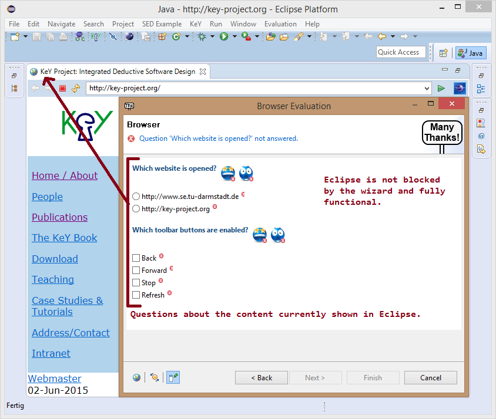
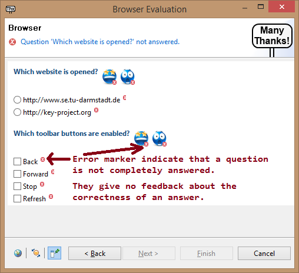
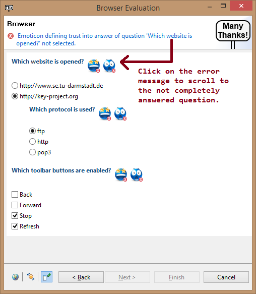

The following sections explain the functionality of the evaluation wizard and how questions are asked. Please read them carefully before you continue.
The evaluation wizard asks questions related to the content currently shown in Eclipse. In the screenshot below questions are asked about the currently opened web browser. During this evaluation, questions will be asked about a proof attempt opened in KeY (external window) or the Symbolic Execution Debugger (perspective in Eclipse).
The evaluation wizard does not block Eclipse. This means that Eclipse is fully functional and can be used without closing the evaluation wizard.
An error marker is used to indicate that a question is not completely answered. An error marker or its absence does not indicate whether a given answer is correct or not.
The following question types are used during this evaluation:
The emoticons shown to the right of a question are used to collect your trust in the correctness of your given answer:

If a question is not completely answered an error message is shown in the title area. You can click on the error message to make the related question visible.
The toolbar of the evaluation wizard provides functionality related to the current wizard page:

Closing the wizard does not cancel the evaluation. The evaluation can be continued at any time just by opening the wizard again (main menu item Evaluation, Understanding Proof Attempts).